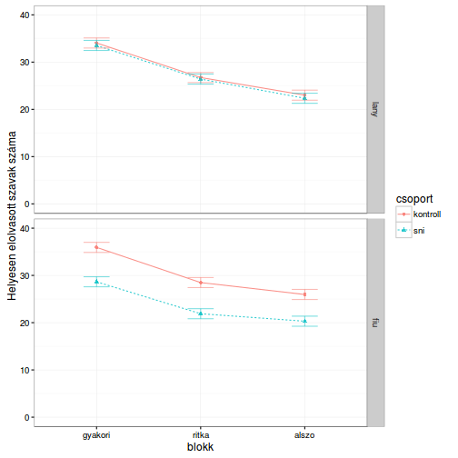

- Áttekintő
- 1. Bevezető
- 2. Hogyan segítsünk magunkon?
- 3. Alapok (objektumok létrehozása)
- 4. Alapok (objektumok indexálása)
- 5. Adatok beolvasása/kiírása
- 6. Adatfeldolgozás
- 7. Vizualizáció
- 8. ANOVA és regressziós modellek
- 9. Kevert-hatás modellek
- 10. Faktoranalízis
- 11. R programozás - esettanulmány
- Published with GitBook
ANOVA: Az ez csomag
Tegyük fel, hogy az olvasásvizsgálati adatokat egy újabb szempont szeretnénk elemezni: arra vagyunk kíváncsiak, hogy az olvasási alteszt három blokkjában (gyakori szavak, ritka szavak, értelmetlen szavak) mért teljesítmény szignifikánsan különbözik-e egymástól, és módosítja-e ezt a hatást a csoport (kontroll/sni) és a nem (fiú/lány). Ez a kérdés tehát egy klasszikus ismételt méréses varianciaanalízis futtatását igényli két between-subject (nem és csoport) és egy within subject (blokk) faktorral. (Alkalmazhatnánk kevert-hatás modellt is, erről lásd a következő fejezetet.)
Faktoriális kísérletek elemzésére nagyon kényelmes az ez csomag. A következőkben ezen csomag használatát mutatjuk be. (Szintén nagyon ajánlott az afex csomag is, lásd az utolsó fejezet esettanulmányát.)
- kezdeti lépések: csomag betöltése + adatok betöltése
# csomag betöltése
library(ez)
# adatok betöltése
data(dyslex)
- adatok szűrése és 'long' formátumúvá alakítása:
# szűrés és releváns változók kiválasztása
dat <- subset(dyslex,
oszt <= 4,
select = c(id, nem, csoport,
olv_helyes1:olv_helyes3)
)
# 'long' formátum
dat <- reshape(dat,
varying = c("olv_helyes1", "olv_helyes2", "olv_helyes3"),
v.names = "helyes_szavak",
timevar = "blokk",
times = c("gyakori", "ritka", "alszo"),
direction = "long")
dat$id <- factor(dat$id)
dat$blokk <- factor(dat$blokk, levels = c("gyakori", "ritka", "alszo"))
- modell megadása (a változók neveit nem kötelező idézőjelbe tennünk, azaz megadhatjuk karakter vektorként és szimbólumként is):
model <- ezANOVA(dat,
dv = "helyes_szavak", # karakter vektorként
wid = id, # szimbólumként
within = blokk,
between = .(csoport, nem),
observed = .(csoport, nem))
## Warning: Data is unbalanced (unequal N per group). Make sure you specified
## a well-considered value for the type argument to ezANOVA().
- eredmények:
print(model)
## $ANOVA
## Effect DFn DFd F p p<.05 ges
## 2 csoport 1 93 6.7328288 1.099811e-02 * 0.0569494297
## 3 nem 1 93 0.1257158 7.237188e-01 0.0010633630
## 5 blokk 2 186 179.9551287 3.254072e-44 * 0.1920025109
## 4 csoport:nem 1 93 3.4493884 6.643999e-02 0.0291765478
## 6 csoport:blokk 2 186 0.3630537 6.960409e-01 0.0004794060
## 7 nem:blokk 2 186 1.8547382 1.593766e-01 0.0024491494
## 8 csoport:nem:blokk 2 186 0.3328531 7.173016e-01 0.0004395267
##
## $`Mauchly's Test for Sphericity`
## Effect W p p<.05
## 5 blokk 0.8213475 0.0001170145 *
## 6 csoport:blokk 0.8213475 0.0001170145 *
## 7 nem:blokk 0.8213475 0.0001170145 *
## 8 csoport:nem:blokk 0.8213475 0.0001170145 *
##
## $`Sphericity Corrections`
## Effect GGe p[GG] p[GG]<.05 HFe
## 5 blokk 0.8484265 6.254740e-38 * 0.8625342
## 6 csoport:blokk 0.8484265 6.610856e-01 0.8625342
## 7 nem:blokk 0.8484265 1.658714e-01 0.8625342
## 8 csoport:nem:blokk 0.8484265 6.816167e-01 0.8625342
## p[HF] p[HF]<.05
## 5 1.626197e-38 *
## 6 6.646058e-01
## 7 1.652863e-01
## 8 6.852199e-01
- ábrázolás:
model_plot <- ezPlot(dat,
dv = helyes_szavak,
wid = id,
within = blokk,
between = .(csoport, nem),
x = blokk,
split = csoport,
row = nem)
## Warning: Data is unbalanced (unequal N per group). Make sure you specified
## a well-considered value for the type argument to ezANOVA().
## Warning in ezStats(data = data, dv = dv, wid = wid, within = within,
## within_full = within_full, : Unbalanced groups. Mean N will be used in
## computation of FLSD
## Warning: `show_guide` has been deprecated. Please use `show.legend`
## instead.
# táblázat a becsült átlagokról
model_plot$data
## csoport nem blokk N Mean SD FLSD lo hi
## 1 kontroll lany gyakori 22 34.04545 10.330156 2.132509 32.97920 35.11171
## 2 kontroll lany ritka 22 26.72727 7.977240 2.132509 25.66102 27.79353
## 3 kontroll lany alszo 22 23.00000 6.510065 2.132509 21.93375 24.06625
## 4 kontroll fiu gyakori 29 35.93103 8.692900 2.132509 34.86478 36.99729
## 5 kontroll fiu ritka 29 28.48276 7.688678 2.132509 27.41650 29.54901
## 6 kontroll fiu alszo 29 25.96552 6.689452 2.132509 24.89926 27.03177
## 7 sni lany gyakori 17 33.52941 11.297774 2.132509 32.46316 34.59567
## 8 sni lany ritka 17 26.41176 9.766389 2.132509 25.34551 27.47802
## 9 sni lany alszo 17 22.35294 7.516159 2.132509 21.28669 23.41920
## 10 sni fiu gyakori 29 28.65517 9.024870 2.132509 27.58892 29.72143
## 11 sni fiu ritka 29 21.89655 7.961267 2.132509 20.83030 22.96281
## 12 sni fiu alszo 29 20.31034 7.309990 2.132509 19.24409 21.37660
# ábra
print(model_plot)

# ggplot ábráról van szó, tehát tetszőlegesen módosíthatjuk
library(ggplot2)
model_plot +
ylab("Helyesen elolvasott szavak száma") +
ylim(0, 40) +
theme_bw()
